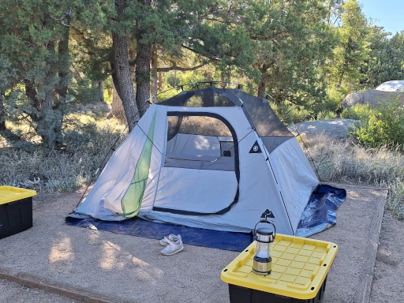
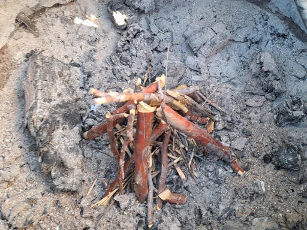
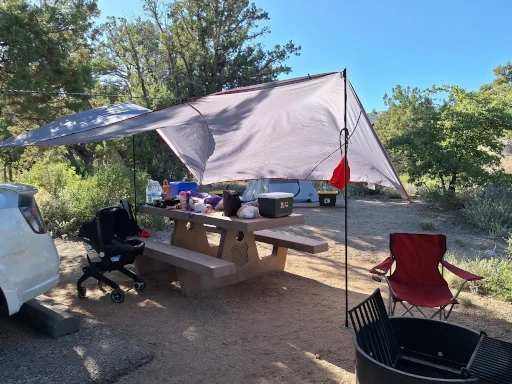

在 Yavapai 兩天一夜露營
我在亞利桑那州的Yavapai露營地體驗了一次充滿挑戰但愉快的露營之旅，享受了涼爽的山間氣候和寧靜的星空第一次在這個州露營。因為夏天的緣故，山下白天已經超過 100F。因此，我們選在山上的 Yavapai campground。這個營區大多採預約制，但也保留一些營地給當日入場的遊客 (First come, first served)。費用方面，一晚 $16，預約費 $8 。我覺得滿划算的。
營場環境
進場出場採自助式。雖然說營場主人在場，但是基本上他也不太管你。反正你有預約，你就準時進場準時離開就好。就算是當日入場的遊客，只要費用裝進信封，投進收費箱即可。營區有水井提供飲用級自來水，我們打了 3 加侖進我們的水桶做為洗手跟滅火用途。此外，我們還有事先在加油站買 2 加侖的包裝水。廁所是旱廁，但是味道沒有想像的重，而且乾淨。可以感覺的裡面有氣流的控制，讓馬桶保持負壓，讓味道不要溢出。如果大家記得把馬桶蓋蓋好，這種系統就不會有太多味道。到場之後，我先檢查營地看有沒有螞蟻窩。還真的有發現一個比較小的入口。根據前人的經驗分享，我只需要簡單的踢一些土把洞封起來就可以。牠們螞蟻有很多入口可用，他們會自己換其他洞進出或另外挖一個。
生火無難度
接著我請牛寶去附近檢一些枯枝，我再用斧頭修整，並且依照大小分類以用於搭建營火。在修整的過程中，我發現在 AZ 露營跟其他不一樣的地方。一般來說，我們會用小刀製作一些火絨或是火絨木。但是這邊實在太乾燥了，這些樹枝一碰就碎，根本沒有辦法加工，索性就放棄。後來我就在地上撿一些松枝當作引火的材料。最後發現，這些木頭非常容易就起火。根本沒有製作火絨的必要。

帳篷搭建
我沒有花費多大的力氣就把睡覺用的帳篷搭建完成。但是我在搭建遮陽棚時遇到了很大的挫折，這讓我體會到 AZ 的環境特殊。我們營地表面並非土壤，而是礫漠。這代表地面很硬，就算營釘硬打進去，也很容易徒手拔起來。加上當天風很大，經歷了不少營釘直接被風吹到拔起。最後，我放棄一部分的營釘，把營繩改在附近的樹幹上面才總算完成。以後遇到這種情況，又沒有樹的情況下，我可能考慮更長的營釘以穿過礫石直達土壤。除此之外，我到現場才發現遮陽棚的廠商事先綁好的營繩不是活結。以至於我在調整張力方面遇到很多困難。我因此也認知到繩結最好再出門前就要準備好，現場的環境有時並不允許當場綁一個新的繩結。

過夜
入夜之後，抬頭就可以看到星空。事實上，就算不抬頭，地平線附近的星星也可以一覽無遺。這邊日夜溫差大，白天的時候 85F，晚上可以冷到 50F。大概是這樣的環境變化，觀察到這邊的生物在下午、傍晚、晚上、半夜、清晨的生物都不太一樣。我在半夜的時候有覺得冷。不過，我用的是木乃伊睡袋。我把全身包的緊緊的只露出鼻子呼吸。拜天氣乾燥所賜，我一整天下來身體並沒有因為流汗的關係黏呼呼的。再加上我穿的是運動長袖，暴露在灰塵的面積有限。我幾乎沒有感覺到流汗。汗液基本在毛孔裡面就蒸散了。原來計畫的洗澡方案也就直接掠過。真正開始感到有點黏的時候，反而是在睡覺的時候。由於睡袋鎖住水汽跟溫度，我才開始有感覺到一點黏，但是整體還好。
鄰居
我很幸運，我的鄰居們都非常安靜。即使他們有發電機，也沒聽過他們開過，也沒有喧鬧吵雜。題外話，隔壁營地的一位老墨很聰明。他戴了一頂傳統 Sombrero ，遮陽效果看起來非常的好。 他們家的大白狗也是一隻有教養，雪白乾淨的狗狗。